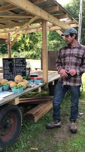

Vegetables


Vegetables are the most visible part of the farm,what you see in the stand bins and what you taste at the table,but they're also the product of a longer system: soil building, crop rotation, and the question, "What can this field support next?"
How we grow
- No synthetic fertilizers, insecticides, herbicides, pesticides, or fungicides
- Draft horses for fieldwork,minimal fossil fuel, human and animal power
- William Albrecht–style soil balancing: calcium, magnesium, potassium, zinc, boron
- Learning from Christine Jones and Helen Atthowe to feed soil microbes with fewer off-farm inputs
On a mixed farm
Vegetables don't stand alone. Livestock can be part of the fertility plan; cover crops protect soil between harvests; timing matters because Northeast Ohio weather makes every season feel shorter than the seed catalog promises. The goal: harvest at peak quality while leaving the field better than you found it.
For customers: think "what's in season, and why." Build meals around what is ready now.
Pair this with At the Stand Now and Setting the Table.
At the Stand Now

Farm stand at the entrance,what's available shifts with weather and harvest.
Live-update page for what's available right now,built for real farm conditions, not grocery-store certainty. During growing season, the farm stand at the entrance is where most visitors meet the farm.
How to use this page
- Check before you drive over.
- Build your meal plan around "in stock now," not what you wish were ready.
- For specific items (holiday poultry, limited batch), contact us and confirm pickup.
- Typical: eggs and produce; first/last harvest notes; sold-out flags; storage notes.
Garlic
We purchased 40-odd pounds of hardneck seed garlic from Fedco Seeds in 2012. We've been growing, saving, eating, and selling that same garlic ever since,by the head, pint, quart, or pound.
Hours: Treat posted hours as "most recent"; confirm via the farm's latest update or contact details below.
Setting the Table
Not just growing food,making it usable on a Tuesday night.
Cooking from a farm stand is repeatable patterns: one-pan meals that absorb "whatever is in season"; egg-based dinners; preservation habits that stretch abundance into winter.
Two recipes
Low-and-slow tomatoes: Oven-dried small sweet tomatoes,cut, oil and salt, dry at low heat. Use for months: eggs, pizza, pasta, pesto. (Cleveland Mag: Juliet tomatoes at 200°F, 6–9 hours; store in bags up to a year.)
Omelet-for-dinner: Mark Trapp's approach: eggs + vegetables (fresh or leftover),onions, mushrooms, peppers, broccoli. See Podcasts for the Eat Better Food Today episode.
Food safety
- Thermometer for poultry; cook eggs until firm for a broad audience.
- Refrigerate perishables promptly; avoid the "danger zone" (40°F–140°F).
- Cook all poultry to 165°F.
Setting the Table for Fruit
In 2021 a deer exclusion fence went up around our main 16-acre field. We planted 100 fruit trees; in 2024 we harvested our first small crop of fruit, grown without synthetics. We're expanding bush fruit,strawberries, blueberries, raspberries,and look forward to offering more tree fruit as we can.